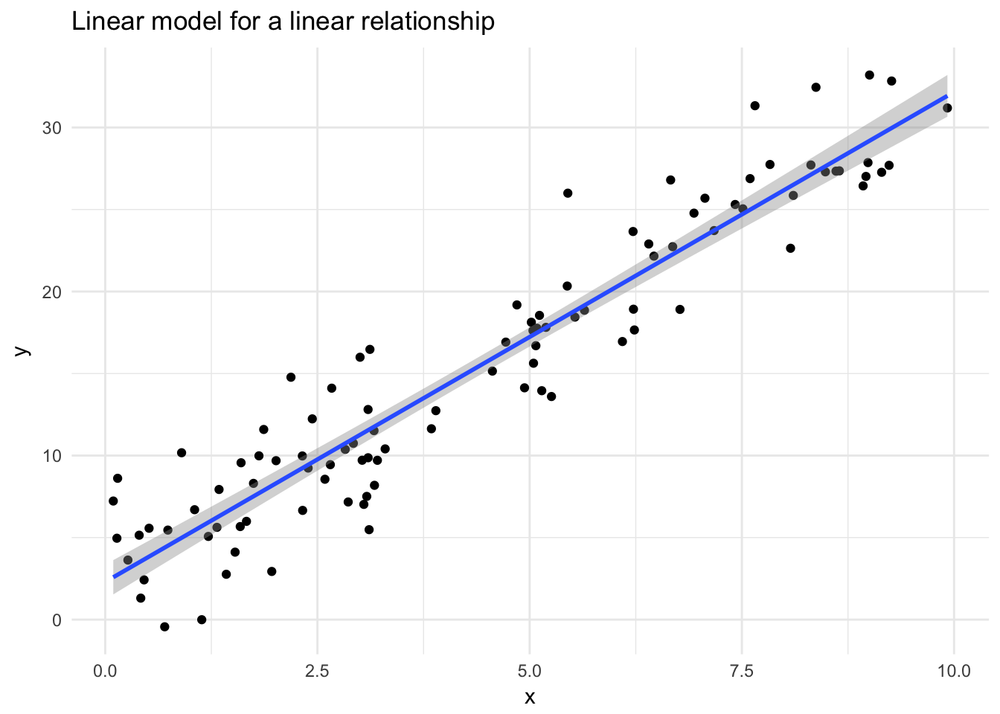
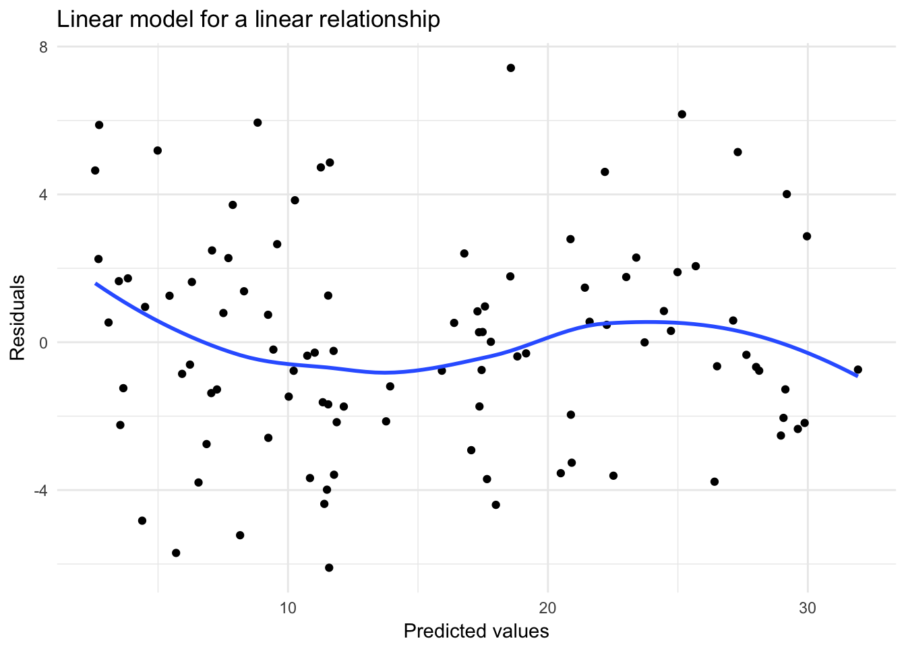
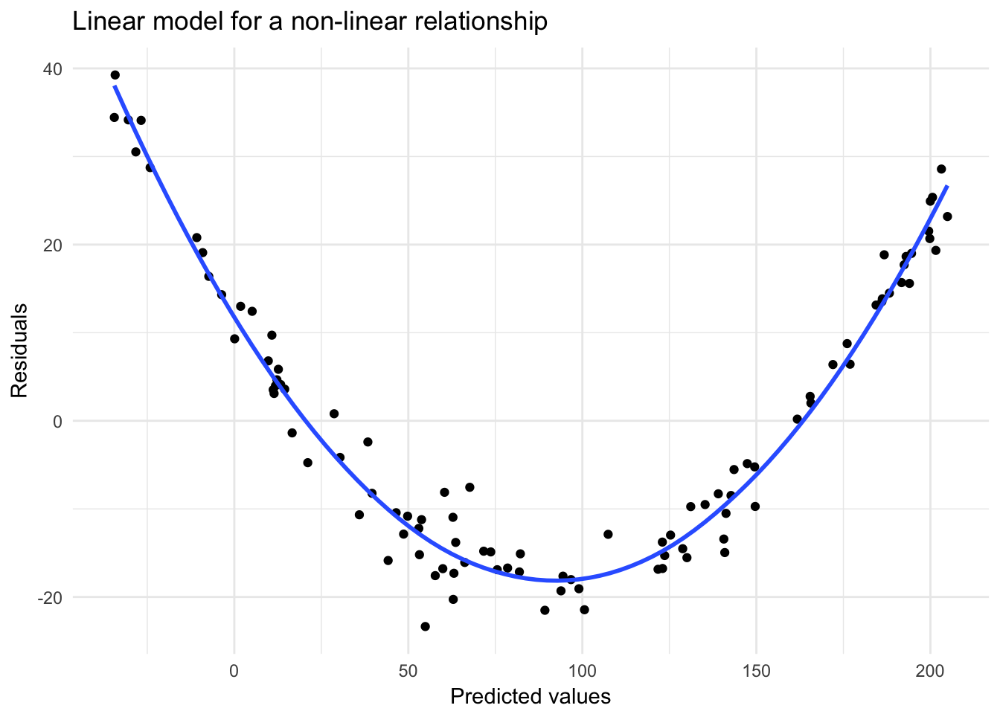
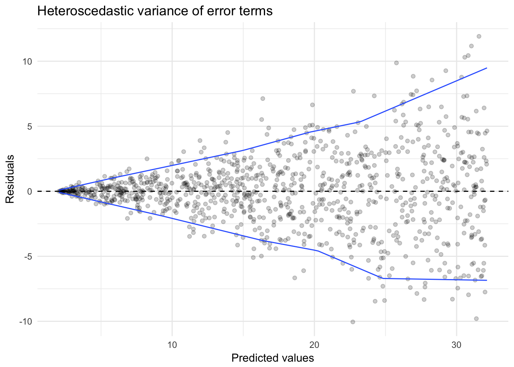
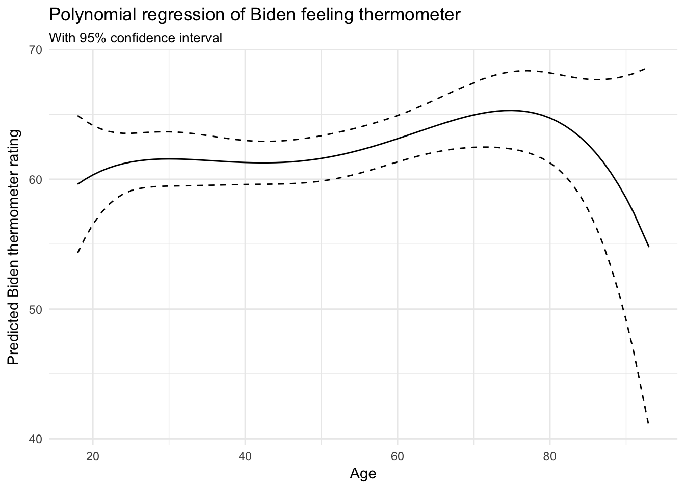
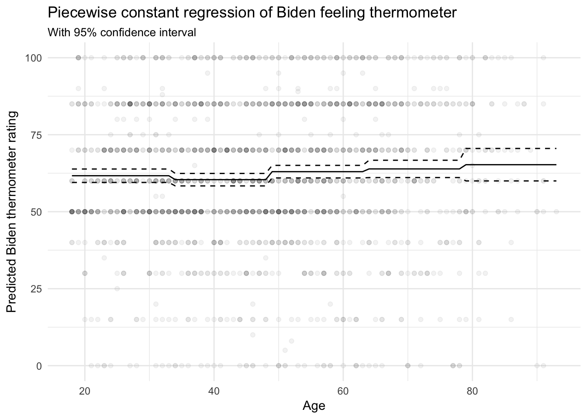
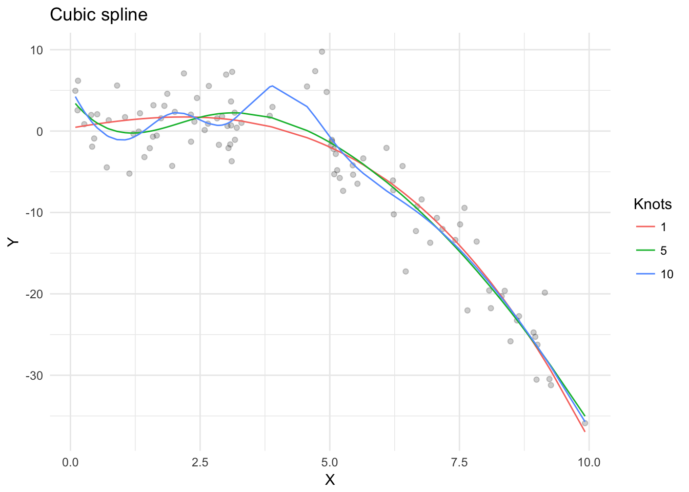
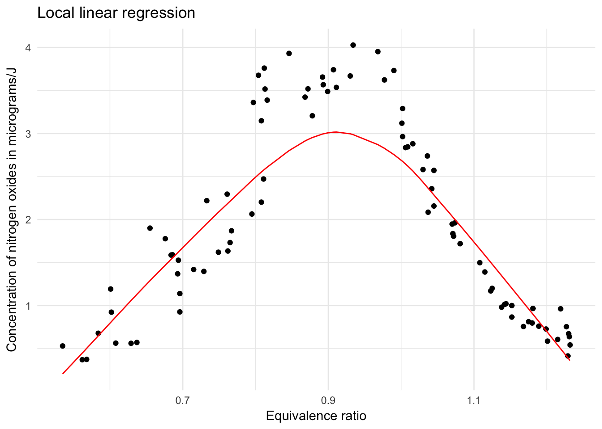
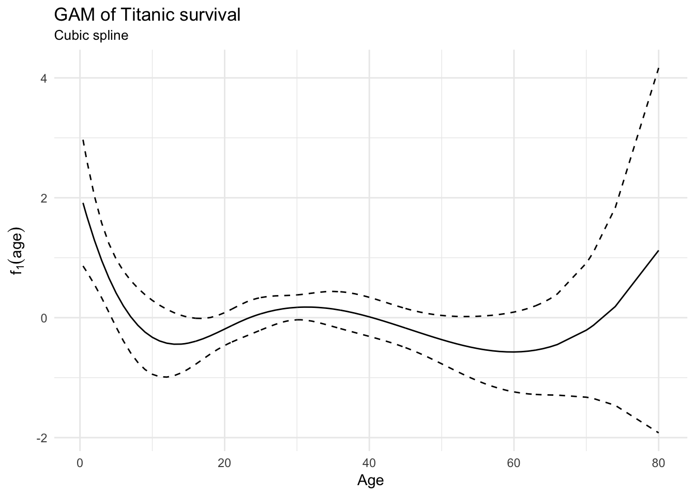

Statistical learning: moving beyond linearity
MACS 30100 - Perspectives on Computational Modeling
Objectives
- Identify reasons for relaxing the linearity assumption of linear models
- Introduce monotonic transformations
- Introduce step functions
- Demonstrate regression and smoothing splines
- Review local regression
- Explain generalized additive models for regression and classification
- Practice interpreting estimated parameters in multiple variable models
library(tidyverse)
library(modelr)
library(broom)
library(rcfss)
library(titanic)
library(knitr)
library(splines)
library(ISLR)
library(lattice)
library(gam)
set.seed(1234)
options(digits = 3)
theme_set(theme_minimal())Linearity in linear models
Linear models are a commonly used statistical learning method because they are intuitive and easy to interpret. The drawback is that in order to create that intuitiveness and interpretability, linear models also make strong assumptions of a linear relationship between the predictor(s) and response variable. It is an approximation, and in the real-world most relationships are not strictly linear. We could turn to more advanced statistical learning methods such as decision trees and support vector machines which do not impose a linear assumption, however conducting inference using those methods is more difficult. Instead, we would like to relax the linearity assumption while still maintaining the interpretability of linear models.
When to relax the assumption
Non-linearity of the data
Linear regression models assume the relationship between predictors and the response variable is a straight line. Here I simulate the data generating process:
\[Y = 2 + 3X + \epsilon\]
where \(\epsilon\) is random error distributed normally \(N(0,3)\).
sim_linear <- data_frame(x = runif(100, 0, 10),
y = 2 + 3 * x + rnorm(100, 0, 3))
sim_linear_mod <- glm(y ~ x, data = sim_linear)
ggplot(sim_linear, aes(x, y)) +
geom_point() +
geom_smooth(method = "lm") +
labs(title = "Linear model for a linear relationship")
When this assumption holds, the residuals of the observations should be distributed normally with an expected error \(E(\epsilon) = 0\) and not be correlated with the fitted values.
sim_linear_pred <- sim_linear %>%
add_predictions(sim_linear_mod) %>%
add_residuals(sim_linear_mod)
# distribution of residuals
ggplot(sim_linear_pred, aes(resid)) +
geom_histogram(aes(y = ..density..)) +
stat_function(fun = dnorm,
args = list(mean = mean(sim_linear_pred$resid),
sd = sd(sim_linear_pred$resid))) +
labs(title = "Linear model for a linear relationship",
x = "Residuals")
# predicted vs. residuals
ggplot(sim_linear_pred, aes(pred, resid)) +
geom_point() +
geom_smooth(se = FALSE) +
labs(title = "Linear model for a linear relationship",
x = "Predicted values",
y = "Residuals")
Inferences we draw from the model will be accurate and the accuracy of the model will be high.
However if the relationship is not actually linear, then we should see a discernable pattern in the residuals plot. Now I simulate a data generating process:
\[Y = 2 + 3X + 2X^2 + \epsilon\]
with the same distribution of \(\epsilon\) and fit a linear model to the data:
\[\hat{Y} = \hat{\beta}_0 + \hat{\beta}_1 X + \epsilon\]
sim_nonlinear <- data_frame(x = runif(100, 0, 10),
y = 2 + 3 * x + 2 * x^2 + rnorm(100, 0, 3))
sim_nonlinear_mod <- glm(y ~ x, data = sim_nonlinear)
ggplot(sim_nonlinear, aes(x, y)) +
geom_point() +
geom_smooth(method = "lm") +
labs(title = "Linear model for a non-linear relationship")
Now that the assumption no longer holds true, we see a distinct polynomial relationship between the predicted values \(\hat{y}_i\) and the residuals \((y_i - \hat{y}_i)^2\).
sim_nonlinear_pred <- sim_nonlinear %>%
add_predictions(sim_nonlinear_mod) %>%
add_residuals(sim_nonlinear_mod)
# distribution of residuals
ggplot(sim_nonlinear_pred, aes(resid)) +
geom_histogram(aes(y = ..density..)) +
stat_function(fun = dnorm,
args = list(mean = mean(sim_nonlinear_pred$resid),
sd = sd(sim_nonlinear_pred$resid))) +
labs(title = "Linear model for a non-linear relationship",
x = "Residuals")
# predicted vs. residuals
ggplot(sim_nonlinear_pred, aes(pred, resid)) +
geom_point() +
geom_smooth(se = FALSE) +
labs(title = "Linear model for a non-linear relationship",
x = "Predicted values",
y = "Residuals")
If we want to draw accurate inferences from the model, we need to relax the linearity assumption in some way.
Non-constant variance of the error terms
Another assumption of linear regression is that the error terms \(\epsilon_i\) have a constant variance, \(\text{Var}(\epsilon_i) = \sigma^2\). This is called homoscedasticity. Remember that the standard errors directly rely upon the estimate of this value:
\[\widehat{s.e.}(\hat{\beta}_j) = \sqrt{\hat{\sigma}^{2} (X^{T}X)^{-1}_{jj}}\]
If the variances of the error terms are non-constant (aka heteroscedastic), our estimates of the parameters \(\hat{\beta}\) will still be unbiased because they do not depend on \(\sigma^2\). However our estimates of the standard errors will be inaccurate - they will either be inflated or deflated, leading to incorrect inferences about the statistical significance of predictor variables.
We can uncover homo- or heteroscedasticity through the use of the residual plot. Below is data generated from the process:
\[Y = 2 + 3X + \epsilon\]
where \(\epsilon\) is random error distributed normally \(N(0,1)\).
sim_homo <- data_frame(x = runif(1000, 0, 10),
y = 2 + 3 * x + rnorm(1000, 0, 1))
sim_homo_mod <- glm(y ~ x, data = sim_homo)
sim_homo %>%
add_predictions(sim_homo_mod) %>%
add_residuals(sim_homo_mod) %>%
ggplot(aes(pred, resid)) +
geom_point(alpha = .2) +
geom_hline(yintercept = 0, linetype = 2) +
geom_quantile(method = "rqss", lambda = 5, quantiles = c(.05, .95)) +
labs(title = "Homoscedastic variance of error terms",
x = "Predicted values",
y = "Residuals")
Compare this to a linear model fit to the data generating process:
\[Y = 2 + 3X + \epsilon\]
where \(\epsilon\) is random error distributed normally \(N(0,\frac{X}{2})\). Note that the variance for the error term of each observation \(\epsilon_i\) is not constant, and is itself a function of \(X\).
sim_hetero <- data_frame(x = runif(1000, 0, 10),
y = 2 + 3 * x + rnorm(1000, 0, (x / 2)))
sim_hetero_mod <- glm(y ~ x, data = sim_hetero)
sim_hetero %>%
add_predictions(sim_hetero_mod) %>%
add_residuals(sim_hetero_mod) %>%
ggplot(aes(pred, resid)) +
geom_point(alpha = .2) +
geom_hline(yintercept = 0, linetype = 2) +
geom_quantile(method = "rqss", lambda = 5, quantiles = c(.05, .95)) +
labs(title = "Heteroscedastic variance of error terms",
x = "Predicted values",
y = "Residuals")
We see a distinct funnel-shape to the relationship between the predicted values and the residuals. This is because by assuming the variance is constant, we substantially over or underestimate the actual response \(Y_i\) as \(X_i\) increases.
How to relax the assumption
We have already seen how to do this by adding quadratic and interactive terms. Here we will review adding other forms of monotonic transformations and explore alternative approaches to introducing non-linearity in both regression and classification problems.
Monotonic transformations
A monotonic function is a function for transforming a set of numbers into a different set of numbers so that the rank order of the original set of numbers is preserved. One major family of monotonic functions is the ladder of powers.
| Transformation | Power | \(f(X)\) |
|---|---|---|
| Cube | 3 | \(X^3\) |
| Square | 2 | \(X^2\) |
| Identity | 1 | \(X\) |
| Square root | \(\frac{1}{2}\) | \(\sqrt{X}\) |
| Cube root | \(\frac{1}{3}\) | \(\sqrt[3]{X}\) |
| Log | 0 (sort of) | \(\ln(X)\) |
data_frame(x = runif(1000, 0, 10),
cube = x^3,
square = x^2,
identity = x,
sqrt = sqrt(x),
cubert = x ^ (1/3),
log = log(x)) %>%
gather(transform, value, -x) %>%
mutate(transform = factor(transform,
levels = c("cube", "square", "identity", "sqrt", "cubert", "log"),
labels = c("X^3", "X^2", "X", "sqrt(X)", "sqrt(X, 3)", "ln(X)"))) %>%
ggplot(aes(x, value)) +
geom_line() +
facet_wrap( ~ transform, scales = "free_y", labeller = label_parsed) +
labs(title = "Ladder of powers transformations",
x = "X",
y = "Transformed X")
- Higher-order power transformations “inflate” large values and “compress” small ones
- Lower-order power transformations “compress” large values and “inflate” small ones
In order for power transformations to “work”, all the values of \(X\) need to be positive (remember that $(0) is undefined). If you need to, you can adjust \(X\) first to ensure it only contains positive values by adding the absolute value of the lowest (negative) value of \(X\) (call it \(X_l\)), plus some small additional value \(\epsilon\) to \(X\) itself:
\[X^* = X + (|X_l| + \epsilon)\]
Which transformation should I use?
This depends on the situation. Typically we use these transformations to induce linearity between \(Y\) and one or more predictors \(X\). Tukey and Mosteller suggest a “bulging rule” for power transformations to make things more linear:
# from http://freakonometrics.hypotheses.org/14967
fakedataMT <- function(p = 1, q = 1, n = 500, s = .1) {
X <- seq(1 / (n + 1), 1 - 1 / (n + 1), length = n)
Y <- (5 + 2 * X ^ p + rnorm(n, sd = s)) ^ (1 / q)
return(data_frame(x = X, y = Y))
}
bind_rows(`1` = fakedataMT(p = .5, q = 2),
`2` = fakedataMT(p = 3, q = -5),
`3` = fakedataMT(p = .5, q = -1),
`4` = fakedataMT(p = 3, q = 5),
.id = "id") %>%
mutate(id = factor(id, levels = 1:4,
labels = c("Log X or Square Y", "Square X or Y",
"Log X or Y", "Square X or Log Y"))) %>%
ggplot(aes(x, y)) +
geom_point() +
facet_wrap(~ id, scales = "free_y") +
labs(title = 'Tukey and Mosteller\'s "Bulging Rule" for monotone transformations to linearity',
x = "X",
y = "Y") +
theme_bw() +
theme(axis.ticks = element_blank(),
axis.text = element_blank(),
panel.grid = element_blank())
Notice that you are not limited to transforming your predictors \(X\) - you can also transform the response variable \(Y\). You can use simple scatterplots and residual plots to help determine if a transformation is necessary, but these are not a substitute for good theory. Is there a theoretical reason why the relationship should be curvilinear rather than strictly linear? If so, use that as a guide to determine an appropriate transformation.
Interpreting transformed variables
Log transformations
Interpreting the transformed variables is relatively straightforward. For instance, let’s use the example of a one-sided log transformation of \(Y\):
\[\ln(Y_i) = \beta_0 + \beta_{1}X_i + \epsilon_i\]
The expected value for \(Y\) is therefore:
\[E(Y) = e^{\beta_0 + \beta_{1}X_i}\]
This means that the effect of a one-unit increase in \(X\) on the expected value of \(Y\) is:
\[\frac{\vartheta E(Y)}{\vartheta X} = e^{\beta_1}\]
What used to be a strictly linear relationship is now multiplicative (and non-linear). So for instance if \(\beta_1 = 0.69\) then \(e^{\beta_1} = 2\). So for every one-unit change in \(X\), we believe the expected value of \(Y\) will double. Conversely, if \(\beta_1 = -0.69\) then \(e^{\beta_1} = 0.5\), meaning a one-unit increase in \(X\) is associated with a decrease in \(\hat{Y}\) by about \(50\%\).
The same thing holds true for a regression where \(X\) is the transformed variable:
\[Y_i = \beta_0 + \beta_{1} \ln(X_i) + \epsilon_i\]
Now the expected value of \(Y\) varies linearly with the natural log of \(X\). Substantively, this is also a multiplicative relationship but in the “opposite direction”. That is, a multiplicative increase in \(X\) has a linear increase on \(Y\) of \(\beta_1\) magnitude.
Log-log regressions
A special case is the instance where both \(X\) and \(Y\) are logarithmically transformed:
\[\ln(Y_i) = \beta_0 + \beta_{1} \ln(X_i) + \dots + \epsilon_i\]
The parameter \(\beta_1\) can be interpreted as the elasticity of \(Y\) with respect to \(X\):
\[\text{Elasticity}_{YX} = \frac{\% \Delta Y}{\% \Delta X}\]
This can be interpreted a few different ways:
- A direct means of interpreting a nonlinear effect: a one-percent change in \(X\) leads to a \(\hat{\beta}_1\)-percent change in \(Y\).
- A double multiplicative relationship: an increase in \(X\) of some multiplicative factor \(\delta\) leads to a multiplicative increase in \(Y\) equal to \(\delta^{\beta_1}\).
- If we have an estimate of \(\hat{\beta}_1 = 0.5\) in a log-log regression, and you want to know the effect on the predicted value of \(Y\) of tripling \(X\), that effect is equal to \(3^{0.5} \approx = 1.73\). That is, tripling \(X\) is associated with an increase in the expected value of \(Y\) by a factor of 1.73 (i.e. increase it by 73 percent).
Polynomial regressions
Polynomial regression is a technique we have already discussed at length and is just a special case of monotonic transformations. Rather than fitting the standard linear model:
\[y_i = \beta_0 + \beta_{1}x_{i} + \epsilon_{i}\]
we instead fit a polynomial function:
\[y_i = \beta_0 + \beta_{1}x_{i} + \beta_{2}x_i^2 + \beta_{3}x_i^3 + \dots + \beta_{d}x_i^d + \epsilon_i\]
As \(d\) increases, the linear model’s flexibility increases. We still use ordinary least squares (OLS) regression (or a Normal GLM) to estimate the parameters, which are also interpreted in the same way.
Biden and age
Let’s take a look at the Joe Biden feeling thermometer data again and estimate a polynomial regression of the relationship between age and attitudes towards Biden:
\[\text{Biden}_i = \beta_0 + \beta_1 \text{Age} + \beta_2 \text{Age}^2 + \beta_3 \text{Age}^3 + \beta_4 \text{Age}^4\]
# get data
biden <- read_csv("data/biden.csv")
# estimate model
biden_age <- glm(biden ~ I(age^1) + I(age^2) + I(age^3) + I(age^4), data = biden)
tidy(biden_age)## term estimate std.error statistic p.value
## 1 (Intercept) 3.75e+01 2.49e+01 1.50 0.133
## 2 I(age^1) 2.37e+00 2.28e+00 1.04 0.299
## 3 I(age^2) -8.33e-02 7.30e-02 -1.14 0.254
## 4 I(age^3) 1.22e-03 9.76e-04 1.25 0.211
## 5 I(age^4) -6.22e-06 4.64e-06 -1.34 0.180# estimate the predicted values and confidence interval
biden_pred <- augment(biden_age, newdata = data_grid(biden, age)) %>%
mutate(pred_low = .fitted - 1.96 * .se.fit,
pred_high = .fitted + 1.96 * .se.fit)
# plot the curve
ggplot(biden_pred, aes(age)) +
geom_point(data = biden, aes(age, biden), alpha = .05) +
geom_line(aes(y = .fitted)) +
geom_line(aes(y = pred_low), linetype = 2) +
geom_line(aes(y = pred_high), linetype = 2) +
labs(title = "Polynomial regression of Biden feeling thermometer",
subtitle = "With 95% confidence interval",
x = "Age",
y = "Predicted Biden thermometer rating")
When interpreting the model, we don’t look to any individual parameters since they are all based on the same variable. Instead we fit the function to the full range of potential values for age (hence the use of data_grid()) and examine the relationship.
In the figure above I graphed the predicted values with 95% confidence intervals. In the case of ordinary linear regression, this is easy to estimate. The standard error is a measure of variance for the estimated parameter and defined by the square root of the diagonal of the variance-covariance matrix:
vcov(biden_age) %>%
kable(caption = "Variance-covariance matrix of Biden polynomial regression",
digits = 5)| (Intercept) | I(age^1) | I(age^2) | I(age^3) | I(age^4) | |
|---|---|---|---|---|---|
| (Intercept) | 620.00316 | -56.31558 | 1.76432 | -0.02291 | 0.00011 |
| I(age^1) | -56.31558 | 5.20765 | -0.16556 | 0.00218 | -0.00001 |
| I(age^2) | 1.76432 | -0.16556 | 0.00533 | -0.00007 | 0.00000 |
| I(age^3) | -0.02291 | 0.00218 | -0.00007 | 0.00000 | 0.00000 |
| I(age^4) | 0.00011 | -0.00001 | 0.00000 | 0.00000 | 0.00000 |
Confidence intervals are typically plus/minus 1.96 times the standard error for the parameter. However for polynomial regression, this is more complicated. Suppose we compute the fit at a particular value of age, \(x_0\):
\[\hat{f}(x_0) = \hat{\beta}_0 + \hat{\beta}_1 x_{0} + \hat{\beta}_2 x_{0}^2 + \hat{\beta}_3 x_{0}^3 + \hat{\beta}_4 x_{0}^4\]
What is the variance of the fit for this point, i.e. \(\text{Var}(\hat{f}(x_o))\). The variance is now a function not only of \(\hat{\beta}_1\), but the variance of each of the estimated parameters \(\hat{\beta}_j\) as well as the covariances between the pairs of estimated parameters (i.e. the off-diagonal elements). We use all of this information to estimate the pointwise standard error of \(\hat{f}(x_0)\), which is the square-root of the variance \(\text{Var}(\hat{f}(x_o))\).
Voter turnout and mental health
Likewise, we can use polynomial regression for classification problems as well. Consider the mental health and voting data. Let’s estimate a logistic regression model of the relationship between mental health and voter turnout:
\[\Pr(\text{Voter turnout} = \text{Yes} | \text{mhealth}) = \frac{\exp[\beta_0 + \beta_1 \text{mhealth} + \beta_2 \text{mhealth}^2 + \beta_3 \text{mhealth}^3 + \beta_4 \text{mhealth}^4]}{1 + \exp[\beta_0 + \beta_1 \text{mhealth} + \beta_2 \text{mhealth}^2 + \beta_3 \text{mhealth}^3 + \beta_4 \text{mhealth}^4]}\]
# load data
mh <- read_csv("data/mental_health.csv")
# estimate model
mh_mod <- glm(vote96 ~ poly(mhealth_sum, 4, raw = TRUE), data = mh,
family = binomial)
tidy(mh_mod)## term estimate std.error statistic p.value
## 1 (Intercept) 1.084465 0.119372 9.08 1.04e-19
## 2 poly(mhealth_sum, 4, raw = TRUE)1 0.244677 0.160774 1.52 1.28e-01
## 3 poly(mhealth_sum, 4, raw = TRUE)2 -0.169696 0.057135 -2.97 2.98e-03
## 4 poly(mhealth_sum, 4, raw = TRUE)3 0.019607 0.006729 2.91 3.57e-03
## 5 poly(mhealth_sum, 4, raw = TRUE)4 -0.000637 0.000245 -2.60 9.20e-03# estimate the predicted values and confidence interval
mh_pred <- augment(mh_mod, newdata = data_grid(mh, mhealth_sum)) %>%
rename(pred = .fitted) %>%
mutate(pred_low = pred - 1.96 * .se.fit,
pred_high = pred + 1.96 * .se.fit)
# plot the log-odds curve
ggplot(mh_pred, aes(mhealth_sum, pred, ymin = pred_low, ymax = pred_high)) +
geom_point() +
geom_errorbar() +
labs(title = "Polynomial regression of voter turnout",
subtitle = "With 95% confidence interval",
x = "Mental health score",
y = "Predicted log-odds of voter turnout")
# plot the probability curve
mh_pred %>%
mutate_each(funs(logit2prob), starts_with("pred")) %>%
ggplot(aes(mhealth_sum, pred, ymin = pred_low, ymax = pred_high)) +
geom_point() +
geom_errorbar() +
labs(title = "Polynomial regression of voter turnout",
subtitle = "With 95% confidence interval",
x = "Mental health score",
y = "Predicted probability of voter turnout")
With logistic regression we presume the relationship between \(X\) and the log-odds of \(Y\) is linear, whereas the relationship between \(X\) and the probability of \(Y\) is curvilinear, defined by the logit function \(\ln \left( \frac{\Pr(Y)}{1 - \Pr(Y)} \right)\). Now with the polynomial terms, even the predicted log-odds relationship is curvilinear. Notice that the confidence intervals are narrow for lower mental health scores and larger for higher values. This is because there are fewer individuals with high levels of depression, so the variance is larger around these scores for mental health.
Step functions
Monotonic transformations impose a global structure on the non-linear function of \(X\). That is, the function applies across the entire range of \(X\). Instead, we may believe that the non-linear behavior of \(X\) is instead a local structure that varies across the range of \(X\). We can use step functions to avoid imposing a global structure. In step functions, you split the predictor \(X\) into bins and fit a different constant to each bin. This converts a continuous variable into an ordered categorical variable.
We create \(c_1, c_2, \dots, c_K\) cutpoints in the range of \(X\), and construct \(K + 1\) new variables \(C_1(X), C_2(X), \dots, C_K(X)\). Each of the new variables is an indicator or dummy variable that returns a 1 if \(x_i\) falls within the range of the cutpoints and 0 otherwise. For any given \(x_i\), the sum of these variables will be precisely \(1\). We can then fit the linear regression model to the new indicator variables as predictors:
\[y_i = \beta_0 + \beta_1 C_1 (x_i) + \beta_2 C_2 (x_i) + \dots + \beta_K C_K (x_i) + \epsilon_i\]
Biden and age
We can fit a piecewise constant regression to the Biden data, dividing age into 5 bins.
# estimate model
biden_step <- glm(biden ~ cut(age, 5), data = biden)
tidy(biden_step)## term estimate std.error statistic p.value
## 1 (Intercept) 61.68 1.11 55.369 0.000
## 2 cut(age, 5)(33,48] -1.28 1.52 -0.841 0.400
## 3 cut(age, 5)(48,63] 1.32 1.52 0.869 0.385
## 4 cut(age, 5)(63,78] 2.22 1.82 1.221 0.222
## 5 cut(age, 5)(78,93.1] 3.59 2.91 1.232 0.218# estimate the predicted values and confidence interval
biden_step_pred <- augment(biden_step, newdata = data_grid(biden, age)) %>%
mutate(pred_low = .fitted - 1.96 * .se.fit,
pred_high = .fitted + 1.96 * .se.fit)
# plot the curve
ggplot(biden_step_pred, aes(age)) +
geom_point(data = biden, aes(age, biden), alpha = .05) +
geom_line(aes(y = .fitted)) +
geom_line(aes(y = pred_low), linetype = 2) +
geom_line(aes(y = pred_high), linetype = 2) +
labs(title = "Piecewise constant regression of Biden feeling thermometer",
subtitle = "With 95% confidence interval",
x = "Age",
y = "Predicted Biden thermometer rating")
Regression splines
Regression splines extend monotonic transformations and piecewise constant regression by fitting separate polynomial functions over different regions of \(X\).
Piecewise polynomials
Piecewise polynomial regression fits separate low-degree polynomials for different regions of \(X\). For instance, a cubic piecewise polynomial regression model takes the form:
\[y_i = \beta_0 + \beta_1 x_i + \beta_2 x_i^2 + \beta_3 x_i^3 + \epsilon_i\]
where the \(\beta\)s are now vectors with different values for different parts of the range of \(X\). The points where the parameters change are called knots.
The special case of a piecewise cubic polynomial with 0 knots is just an ordinary cubic polynomial:
\[y_i = \beta_0 + \beta_1 x_i + \beta_2 x_i^2 + \beta_3 x_i^3 + \epsilon_i\]
Likewise, the special case of a piecewise constant polynomial (i.e. polynomial with degree \(0\)) is piecewise constant regression.
A piecewise cubic polynomial with a single knot at point \(c\) takes the form:
\[y_i = \begin{cases} \beta_{01} + \beta_{11}x_i^2 + \beta_{21}x_i^2 + \beta_{31}x_i^3 + \epsilon_i & \text{if } x_i < c \\ \beta_{02} + \beta_{12}x_i^2 + \beta_{22}x_i^2 + \beta_{32}x_i^3 + \epsilon_i & \text{if } x_i \geq c \end{cases}\]
In essence, we fit two separate polynomial functions to the data. Each function is estimated using least squares applied to the individual functions and subsets of data. The more knots \(K\) used, the more flexible the piecewise polynomial.
Of course this leads to a somewhat odd and discontinuous function:
# simulate data
sim_piece <- data_frame(x = runif(100, 0, 10),
y = ifelse(x < 5,
.05 * x + .05 * x^2 + .05 * x^3 + rnorm(100, 0, 3),
.1 * x + .1 * x^2 - .05 * x^3 + rnorm(100, 0, 3)))
# estimate models
sim_piece_mod1 <- glm(y ~ poly(x, 3, raw = TRUE), data = sim_piece, subset = x < 5)
sim_piece_mod2 <- glm(y ~ poly(x, 3, raw = TRUE), data = sim_piece, subset = x >= 5)
# draw the plot
sim_piece %>%
data_grid(x = seq(0, 10, by = .001)) %>%
gather_predictions(sim_piece_mod1, sim_piece_mod2) %>%
filter((x < 5 & model == "sim_piece_mod1") |
(x >=5 & model == "sim_piece_mod2")) %>%
ggplot(aes(x, y)) +
geom_point(data = sim_piece) +
geom_line(aes(y = pred, color = model), size = 1) +
geom_vline(xintercept = 5, linetype = 2, color = "grey") +
labs(title = "Piecewise cubic regression",
x = "X",
y = "Y") +
theme(legend.position = "none")
Constraints and splines
Instead of a discontinuous piecewise function, we’d rather have something continuous. That is, we impose the constraint that the fitted curve must be continuous.
###### very hackish implementation
# simulate data
sim_piece_cont <- sim_piece %>%
mutate(y = ifelse(x < 5,
15 + .05 * x - .5 * x^2 - .05 * x^3,
.05 * x + .1 * x^2 - .05 * x^3))
# estimate models
sim_piece_cont_mod1 <- glm(y ~ poly(x, 3, raw = TRUE), data = sim_piece_cont, subset = x < 5)
sim_piece_cont_mod2 <- glm(y ~ poly(x, 3, raw = TRUE), data = sim_piece_cont, subset = x >= 5)
# draw the plot
sim_piece_cont %>%
data_grid(x = seq(0, 10, by = .001)) %>%
gather_predictions(sim_piece_cont_mod1, sim_piece_cont_mod2) %>%
filter((x < 5 & model == "sim_piece_cont_mod1") |
(x >=5 & model == "sim_piece_cont_mod2")) %>%
ggplot() +
geom_point(data = sim_piece %>%
mutate(y = ifelse(x < 5,
15 + .05 * x - .5 * x^2 - .05 * x^3 + rnorm(100, 0, 3),
.05 * x + .1 * x^2 - .05 * x^3) + rnorm(100, 0, 3)), aes(x, y)) +
geom_line(aes(x, pred, color = model), size = 1) +
geom_vline(xintercept = 5, linetype = 2, color = "grey") +
labs(title = "Continuous piecewise cubic regression",
x = "X",
y = "Y") +
theme(legend.position = "none")
But notice that this constraint is insufficient. Now the function is continuous, but still looks unnatural because of the V-shaped join. We should add two additional constraints: not only should the fitted curve be continuous, but the first and second derivatives should also be continuous at the knot. This will generate a fitted curve that is continuous and smooth.
# estimate models
sim_piece_smooth <- glm(y ~ bs(x, knots = c(5)), data = sim_piece)
# draw the plot
sim_piece %>%
add_predictions(sim_piece_smooth) %>%
ggplot(aes(x)) +
geom_point(aes(y = y)) +
geom_line(aes(y = pred), size = 1) +
geom_vline(xintercept = 5, linetype = 2, color = "grey") +
labs(title = "Cubic spline",
x = "X",
y = "Y") +
theme(legend.position = "none")
By increasing the number of knots, we will increase the flexibility of the resulting spline:
data_frame(terms = c(1, 5, 10),
models = map(terms, ~ glm(y ~ bs(x, df = . + 3), data = sim_piece)),
pred = map(models, ~ add_predictions(sim_piece, .))) %>%
unnest(pred) %>%
ggplot(aes(x, y)) +
geom_point(data = sim_piece, alpha = .2) +
geom_line(aes(y = pred, color = factor(terms))) +
labs(title = "Cubic spline",
x = "X",
y = "Y",
color = "Knots")
Choosing the number and location of knots
Typically knots are placed in a uniform fashion; that is, the cutpoints \(c\) are determined by first identifying the number of knots \(K\) for the model, then partitioning \(X\) into uniform quantiles. So if we fit a cubic regression spline with 5 knots on the Biden feeling thermometer regression, it would divide age into 5 equal quantiles and estimate the cubic spline function for each quantile:
# estimate model
biden_spline <- glm(biden ~ bs(age, df = 8), data = biden)
# estimate the predicted values and confidence interval
biden_spline_pred <- augment(biden_spline, newdata = data_grid(biden, age)) %>%
mutate(pred_low = .fitted - 1.96 * .se.fit,
pred_high = .fitted + 1.96 * .se.fit)
# plot the curve
ggplot(biden_spline_pred, aes(age)) +
# geom_point(data = biden, aes(age, biden), alpha = .05) +
geom_line(aes(y = .fitted)) +
geom_line(aes(y = pred_low), linetype = 2) +
geom_line(aes(y = pred_high), linetype = 2) +
geom_vline(xintercept = attr(bs(biden$age, df = 8), "knots"),
linetype = 2, color = "blue") +
labs(title = "Cubic spline regression of Biden feeling thermometer",
subtitle = "5 knots, with 95% confidence interval",
x = "Age",
y = "Predicted Biden thermometer rating")
But this still leaves unaddressed the matter of how many knots should we use? Or how many degrees should each polynomial be? While theory should still be our guide, we can also use cross-validation to determine the optimal number of knots and/or polynomial degrees.
Let’s apply this approach to the running Wage example in ISL.
wage <- as_tibble(Wage)
ggplot(wage, aes(age, wage)) +
geom_point(alpha = .2) +
labs(x = "Age",
y = "Wage")
We can estimate \(10\)-fold CV MSE for varying numbers of polynomial degrees and knots.
# function to simplify things
wage_spline_cv <- function(data, degree = 3, df = NULL){
# estimate the model on each fold
models <- map(data$train, ~ glm(wage ~ bs(age, df = df, degree = degree),
data = .))
# calculate mse for each test fold
models_mse <- map2_dbl(models, data$test, mse)
return(mean(models_mse, na.rm = TRUE))
}
# fold the data
wage_kfold <- crossv_kfold(wage, k = 10)
# estimate mse for polynomial degrees in 1:10
wage_degree_mse <- data_frame(degrees = 1:10,
mse = map_dbl(degrees, ~ wage_spline_cv(wage_kfold, degree = .,
df = 3 + .)))
# estimate mse for degrees of freedom (aka knots)
wage_df_mse <- data_frame(df = 1:10,
mse = map_dbl(df, ~ wage_spline_cv(wage_kfold, df = 3 + .)))
# graph the results
ggplot(wage_degree_mse, aes(degrees, mse)) +
geom_point() +
geom_line() +
scale_x_continuous(breaks = 1:10) +
labs(title = "Optimal number of degrees for wage spline regression",
subtitle = "Knots = 3",
x = "Highest-order polynomial",
y = "10-fold CV MSE")
ggplot(wage_df_mse, aes(df, mse)) +
geom_point() +
geom_line() +
scale_x_continuous(breaks = 1:10) +
labs(title = "Optimal number of knots for wage spline regression",
subtitle = "Highest-order polynomial = 3",
x = "Knots",
y = "10-fold CV MSE")
These results suggest the optimal number of polynomial degrees is 6, while the optimal number of knots is 2. The resulting model produced by these parameters is:
wage_optim <- glm(wage ~ bs(age, df = 8, degree = 6), data = wage)
augment(wage_optim, newdata = data_grid(wage, age)) %>%
mutate(.fitted_low = .fitted - 1.96 * .se.fit,
.fitted_high = .fitted + 1.96 * .se.fit) %>%
ggplot(aes(age, .fitted)) +
geom_point(data = wage, aes(y = wage), alpha = .05) +
geom_line() +
geom_line(aes(y = .fitted_low), linetype = 2) +
geom_line(aes(y = .fitted_high), linetype = 2) +
geom_vline(xintercept = attr(bs(wage$age, df = 8, degree = 6), "knots"),
linetype = 2, color = "blue") +
labs(title = "Sixth-order polynomial spline of wage",
subtitle = "Knots = 2",
x = "Age",
y = "Wage")
Local regression
Locally weighted scatterplot smoothing (local regression, LOWESS, or LOESS) fits a separate non-linear function at each target point \(x_0\) using only the nearby training observations. This method estimates a regression line based on localized subsets of the data, building up the global function \(f\) point-by-point.
Algorithm for local linear regression
- Gather the fraction \(s = \frac{k}{n}\) of training points whose \(x_i\) are closest to \(x_0\).
- Assign a weight \(K_{i0} = K(x_i, x_0)\) to each point in the neighborhood, so that the point furthest from \(x_0\) has a weight of 0, and the closest has the highest weight. All but these \(k\) nearest neighbors get a weight of 0.
- Fit a weighted least squares regression of the \(y_i\) on the \(x_i\) using the aformentioned weights. Weighted least squares allows us to adjust the variance for each observation \(\sigma_i^2\) by weights \(w_i\). This is useful in correcting for heteroscedasticity in OLS, and also allows us to estimate the local regression.
- The fitted value at \(x_0\) is given by \(\hat{f}(x_0) = \hat{\beta}_0 + \hat{\beta}_1 x_0\)
To obtain the local regression fit at a new value of \(x_0\), we have to perform this same procedure again adjusting the weights for the new region of data.
Here is an example of a local linear regression on the ethanol dataset in the lattice package:

The LOESS is built up point-by-point:
One important argument you can control with LOESS is the span, or how smooth the LOESS function will become. A larger span will result in a smoother curve, but may not be as accurate. A smaller span will be more local and wiggly, but improve our fit to the training data.
Generalized additive models
So far each of these nonlinear methods has been implemented for a single predictor \(X\). To generalize this approach to multiple predictors \(X_1, X_2, \dots, X_p\), we need to utilize a generalized additive model (GAM). GAMs extend the linear model by allowing non-linear functions of each of the variables, while also maintaining the additive assumption that each variable independently and additively shapes the response variable \(Y\). GAMs work for both quantitative and qualitative responses.
GAMs for regression problems
To extend the multiple linear regression model
\[y_i = \beta_0 + \beta_{1} X_{i1} + \beta_{2} X_{i2} + \dots + \beta_{p} X_{ip} + \epsilon_i\]
and allow for non-linear relationships between each predictor and the response variable, we replace each linear component \(\beta_{j} x_{ij}\) with a smooth, non-linear function \(f_j(x_{ij})\):
\[y_i = \beta_0 + \sum_{j = 1}^p f_j(x_{ij}) + \epsilon_i\]
\[y_i = \beta_0 + f_1(x_{i1}) + \beta_{2} f_2(x_{i2}) + \dots + f_p(x_{ip}) + \epsilon_i\]
As you can see, each \(f_j\) provides an additive component to the overall model of \(y_i\). We estimate each \(f_j\) then add together all of their contributions. Importantly, each functional component is estimated simultaneously so that it is truly still a multiple variable regression model. Let’s estimate a GAM for the Biden dataset using the model
\[\text{Biden} = \beta_0 + f_1(\text{Age}) + f_2(\text{Education}) + f_3(\text{Gender}) + \epsilon\]
Where \(f_1\) and \(f_2\) are cubic splines with 2 knots and \(f_3\) generates a separate constant for males and females using traditional dummy variables.
library(gam)
# estimate model for splines on age and education plus dichotomous female
biden_gam <- gam(biden ~ bs(age, df = 5) + bs(educ, df = 5) + female, data = biden)
summary(biden_gam)##
## Call: gam(formula = biden ~ bs(age, df = 5) + bs(educ, df = 5) + female,
## data = biden)
## Deviance Residuals:
## Min 1Q Median 3Q Max
## -67.499 -13.522 0.548 17.953 46.582
##
## (Dispersion Parameter for gaussian family taken to be 532)
##
## Null Deviance: 994144 on 1806 degrees of freedom
## Residual Deviance: 955772 on 1795 degrees of freedom
## AIC: 16485
##
## Number of Local Scoring Iterations: 2
##
## Anova for Parametric Effects
## Df Sum Sq Mean Sq F value Pr(>F)
## bs(age, df = 5) 5 4038 808 1.52 0.18
## bs(educ, df = 5) 5 16660 3332 6.26 9.2e-06 ***
## female 1 17673 17673 33.19 9.8e-09 ***
## Residuals 1795 955772 532
## ---
## Signif. codes: 0 '***' 0.001 '**' 0.01 '*' 0.05 '.' 0.1 ' ' 1# get graphs of each term
biden_gam_terms <- preplot(biden_gam, se = TRUE, rug = FALSE)
## age
data_frame(x = biden_gam_terms$`bs(age, df = 5)`$x,
y = biden_gam_terms$`bs(age, df = 5)`$y,
se.fit = biden_gam_terms$`bs(age, df = 5)`$se.y) %>%
mutate(y_low = y - 1.96 * se.fit,
y_high = y + 1.96 * se.fit) %>%
ggplot(aes(x, y)) +
geom_line() +
geom_line(aes(y = y_low), linetype = 2) +
geom_line(aes(y = y_high), linetype = 2) +
labs(title = "GAM of Biden feeling thermometer",
subtitle = "Cubic spline",
x = "Age",
y = expression(f[1](age)))
## education
data_frame(x = biden_gam_terms$`bs(educ, df = 5)`$x,
y = biden_gam_terms$`bs(educ, df = 5)`$y,
se.fit = biden_gam_terms$`bs(educ, df = 5)`$se.y) %>%
mutate(y_low = y - 1.96 * se.fit,
y_high = y + 1.96 * se.fit) %>%
ggplot(aes(x, y)) +
geom_line() +
geom_line(aes(y = y_low), linetype = 2) +
geom_line(aes(y = y_high), linetype = 2) +
labs(title = "GAM of Biden feeling thermometer",
subtitle = "Cubic spline",
x = "Education",
y = expression(f[2](education)))
## gender
data_frame(x = biden_gam_terms$female$x,
y = biden_gam_terms$female$y,
se.fit = biden_gam_terms$female$se.y) %>%
unique %>%
mutate(y_low = y - 1.96 * se.fit,
y_high = y + 1.96 * se.fit,
x = factor(x, levels = 0:1, labels = c("Male", "Female"))) %>%
ggplot(aes(x, y, ymin = y_low, ymax = y_high)) +
geom_errorbar() +
geom_point() +
labs(title = "GAM of Biden feeling thermometer",
x = NULL,
y = expression(f[3](gender)))
For age, there does not appear to be a substantial or significant relationship with Biden feeling thermometers after controlling for education and gender. The cubic spline is relatively flat and the 95% confidence interval is wide. For education, the effect appears substantial and statistically significant; as education increases, predicted Biden feeling thermometer ratings decrease until approximately 15 years of formal education, then increase again for those with college or post-graduate degrees. Finally, for gender the difference between males and females is substantial and statistically distinguishable from 0.
Instead of cubic splines, we could use local regression. At this point we can no longer use OLS to fit the model, but instead uses a backfitting process to model each predictor simultaneously.
# estimate model for splines on age and education plus dichotomous female
biden_gam_local <- gam(biden ~ lo(age) + lo(educ) + female, data = biden)
summary(biden_gam_local)##
## Call: gam(formula = biden ~ lo(age) + lo(educ) + female, data = biden)
## Deviance Residuals:
## Min 1Q Median 3Q Max
## -66.66 -13.92 1.28 18.97 44.03
##
## (Dispersion Parameter for gaussian family taken to be 534)
##
## Null Deviance: 994144 on 1806 degrees of freedom
## Residual Deviance: 959708 on 1798 degrees of freedom
## AIC: 16488
##
## Number of Local Scoring Iterations: 2
##
## Anova for Parametric Effects
## Df Sum Sq Mean Sq F value Pr(>F)
## lo(age) 1 1406 1406 2.63 0.1
## lo(educ) 1 8338 8338 15.62 8.1e-05 ***
## female 1 17750 17750 33.25 9.5e-09 ***
## Residuals 1798 959708 534
## ---
## Signif. codes: 0 '***' 0.001 '**' 0.01 '*' 0.05 '.' 0.1 ' ' 1
##
## Anova for Nonparametric Effects
## Npar Df Npar F Pr(F)
## (Intercept)
## lo(age) 2.4 0.83 0.4544
## lo(educ) 3.1 3.87 0.0085 **
## female
## ---
## Signif. codes: 0 '***' 0.001 '**' 0.01 '*' 0.05 '.' 0.1 ' ' 1# get graphs of each term
biden_gam_local_terms <- preplot(biden_gam_local, se = TRUE, rug = FALSE)
## age
data_frame(x = biden_gam_local_terms$`lo(age)`$x,
y = biden_gam_local_terms$`lo(age)`$y,
se.fit = biden_gam_local_terms$`lo(age)`$se.y) %>%
mutate(y_low = y - 1.96 * se.fit,
y_high = y + 1.96 * se.fit) %>%
ggplot(aes(x, y)) +
geom_line() +
geom_line(aes(y = y_low), linetype = 2) +
geom_line(aes(y = y_high), linetype = 2) +
labs(title = "GAM of Biden feeling thermometer",
subtitle = "Local regression",
x = "Age",
y = expression(f[1](age)))
## education
data_frame(x = biden_gam_local_terms$`lo(educ)`$x,
y = biden_gam_local_terms$`lo(educ)`$y,
se.fit = biden_gam_local_terms$`lo(educ)`$se.y) %>%
mutate(y_low = y - 1.96 * se.fit,
y_high = y + 1.96 * se.fit) %>%
ggplot(aes(x, y)) +
geom_line() +
geom_line(aes(y = y_low), linetype = 2) +
geom_line(aes(y = y_high), linetype = 2) +
labs(title = "GAM of Biden feeling thermometer",
subtitle = "Local regression",
x = "Education",
y = expression(f[2](education)))
## gender
data_frame(x = biden_gam_local_terms$female$x,
y = biden_gam_local_terms$female$y,
se.fit = biden_gam_local_terms$female$se.y) %>%
unique %>%
mutate(y_low = y - 1.96 * se.fit,
y_high = y + 1.96 * se.fit,
x = factor(x, levels = 0:1, labels = c("Male", "Female"))) %>%
ggplot(aes(x, y, ymin = y_low, ymax = y_high)) +
geom_errorbar() +
geom_point() +
labs(title = "GAM of Biden feeling thermometer",
x = NULL,
y = expression(f[3](gender)))
The results are pretty similar to the cubic splines.
We can also use GAMs for classification problems, like the Titanic example.
library(titanic)
# estimate model for splines on age and education plus dichotomous female
titanic_gam <- gam(Survived ~ bs(Age, df = 5) + bs(Fare, df = 5) + Sex, data = titanic_train,
family = binomial)
summary(titanic_gam)##
## Call: gam(formula = Survived ~ bs(Age, df = 5) + bs(Fare, df = 5) +
## Sex, family = binomial, data = titanic_train)
## Deviance Residuals:
## Min 1Q Median 3Q Max
## -2.743 -0.605 -0.491 0.735 2.230
##
## (Dispersion Parameter for binomial family taken to be 1)
##
## Null Deviance: 965 on 713 degrees of freedom
## Residual Deviance: 684 on 702 degrees of freedom
## AIC: 708
## 177 observations deleted due to missingness
##
## Number of Local Scoring Iterations: 9
##
## Anova for Parametric Effects
## Df Sum Sq Mean Sq F value Pr(>F)
## bs(Age, df = 5) 5 8 1.7 1.60 0.16
## bs(Fare, df = 5) 5 41 8.2 7.79 3.8e-07 ***
## Sex 1 142 141.6 135.01 < 2e-16 ***
## Residuals 702 736 1.0
## ---
## Signif. codes: 0 '***' 0.001 '**' 0.01 '*' 0.05 '.' 0.1 ' ' 1# get graphs of each term
titanic_gam_terms <- preplot(titanic_gam, se = TRUE, rug = FALSE)
## age
data_frame(x = titanic_gam_terms$`bs(Age, df = 5)`$x,
y = titanic_gam_terms$`bs(Age, df = 5)`$y,
se.fit = titanic_gam_terms$`bs(Age, df = 5)`$se.y) %>%
mutate(y_low = y - 1.96 * se.fit,
y_high = y + 1.96 * se.fit) %>%
ggplot(aes(x, y)) +
geom_line() +
geom_line(aes(y = y_low), linetype = 2) +
geom_line(aes(y = y_high), linetype = 2) +
labs(title = "GAM of Titanic survival",
subtitle = "Cubic spline",
x = "Age",
y = expression(f[1](age)))
## fare
data_frame(x = titanic_gam_terms$`bs(Fare, df = 5)`$x,
y = titanic_gam_terms$`bs(Fare, df = 5)`$y,
se.fit = titanic_gam_terms$`bs(Fare, df = 5)`$se.y) %>%
mutate(y_low = y - 1.96 * se.fit,
y_high = y + 1.96 * se.fit) %>%
ggplot(aes(x, y)) +
geom_line() +
geom_line(aes(y = y_low), linetype = 2) +
geom_line(aes(y = y_high), linetype = 2) +
labs(title = "GAM of Titanic survival",
subtitle = "Cubic spline",
x = "Fare",
y = expression(f[2](fare)))
## gender
data_frame(x = titanic_gam_terms$Sex$x,
y = titanic_gam_terms$Sex$y,
se.fit = titanic_gam_terms$Sex$se.y) %>%
unique %>%
mutate(y_low = y - 1.96 * se.fit,
y_high = y + 1.96 * se.fit,
x = factor(x, levels = c("male", "female"), labels = c("Male", "Female"))) %>%
ggplot(aes(x, y, ymin = y_low, ymax = y_high)) +
geom_errorbar() +
geom_point() +
labs(title = "GAM of Titanic survival",
x = NULL,
y = expression(f[3](gender)))
Acknowledgements
- Bootstrap standard error of the mean example derived from A gentle introduction to bootstrapping.
- “Why use the bootstrap?” reproduced from Explaining to laypeople why bootstrapping works - Stack Overflow, licensed under the CC BY-SA 3.0 Creative Commons License.
Session Info
devtools::session_info()## setting value
## version R version 3.3.2 (2016-10-31)
## system x86_64, darwin13.4.0
## ui X11
## language (EN)
## collate en_US.UTF-8
## tz America/Chicago
## date 2017-02-22
##
## package * version date source
## assertthat 0.1 2013-12-06 CRAN (R 3.3.0)
## backports 1.0.5 2017-01-18 CRAN (R 3.3.2)
## broom * 0.4.2 2017-02-13 CRAN (R 3.3.2)
## codetools 0.2-15 2016-10-05 CRAN (R 3.3.2)
## colorspace 1.3-2 2016-12-14 CRAN (R 3.3.2)
## DBI 0.5-1 2016-09-10 CRAN (R 3.3.0)
## devtools 1.12.0 2016-06-24 CRAN (R 3.3.0)
## digest 0.6.12 2017-01-27 CRAN (R 3.3.2)
## dplyr * 0.5.0 2016-06-24 CRAN (R 3.3.0)
## evaluate 0.10 2016-10-11 CRAN (R 3.3.0)
## forcats 0.2.0 2017-01-23 CRAN (R 3.3.2)
## foreach * 1.4.3 2015-10-13 CRAN (R 3.3.0)
## foreign 0.8-67 2016-09-13 CRAN (R 3.3.2)
## gam * 1.14 2016-09-10 CRAN (R 3.3.0)
## gganimate * 0.1 2016-11-11 Github (dgrtwo/gganimate@26ec501)
## ggplot2 * 2.2.1 2016-12-30 CRAN (R 3.3.2)
## gtable 0.2.0 2016-02-26 CRAN (R 3.3.0)
## haven 1.0.0 2016-09-23 cran (@1.0.0)
## hms 0.3 2016-11-22 CRAN (R 3.3.2)
## htmltools 0.3.5 2016-03-21 CRAN (R 3.3.0)
## httr 1.2.1 2016-07-03 CRAN (R 3.3.0)
## ISLR * 1.0 2013-06-11 CRAN (R 3.3.0)
## iterators 1.0.8 2015-10-13 CRAN (R 3.3.0)
## jsonlite 1.2 2016-12-31 CRAN (R 3.3.2)
## knitr * 1.15.1 2016-11-22 cran (@1.15.1)
## labeling 0.3 2014-08-23 CRAN (R 3.3.0)
## lattice * 0.20-34 2016-09-06 CRAN (R 3.3.2)
## lazyeval 0.2.0 2016-06-12 CRAN (R 3.3.0)
## lubridate 1.6.0 2016-09-13 CRAN (R 3.3.0)
## magrittr 1.5 2014-11-22 CRAN (R 3.3.0)
## Matrix 1.2-8 2017-01-20 CRAN (R 3.3.2)
## MatrixModels * 0.4-1 2015-08-22 CRAN (R 3.3.0)
## memoise 1.0.0 2016-01-29 CRAN (R 3.3.0)
## mnormt 1.5-5 2016-10-15 CRAN (R 3.3.0)
## modelr * 0.1.0 2016-08-31 CRAN (R 3.3.0)
## munsell 0.4.3 2016-02-13 CRAN (R 3.3.0)
## nlme 3.1-131 2017-02-06 CRAN (R 3.3.2)
## plyr 1.8.4 2016-06-08 CRAN (R 3.3.0)
## psych 1.6.12 2017-01-08 CRAN (R 3.3.2)
## purrr * 0.2.2 2016-06-18 CRAN (R 3.3.0)
## quantreg * 5.29 2016-09-04 CRAN (R 3.3.0)
## R6 2.2.0 2016-10-05 CRAN (R 3.3.0)
## rcfss * 0.1.3 2017-02-16 local
## Rcpp 0.12.9 2017-01-14 CRAN (R 3.3.2)
## readr * 1.0.0 2016-08-03 CRAN (R 3.3.0)
## readxl 0.1.1 2016-03-28 CRAN (R 3.3.0)
## reshape2 1.4.2 2016-10-22 CRAN (R 3.3.0)
## rmarkdown 1.3 2016-12-21 CRAN (R 3.3.2)
## rprojroot 1.2 2017-01-16 CRAN (R 3.3.2)
## rvest 0.3.2 2016-06-17 CRAN (R 3.3.0)
## scales 0.4.1 2016-11-09 CRAN (R 3.3.1)
## SparseM * 1.74 2016-11-10 CRAN (R 3.3.2)
## stringi 1.1.2 2016-10-01 CRAN (R 3.3.0)
## stringr 1.1.0 2016-08-19 cran (@1.1.0)
## tibble * 1.2 2016-08-26 cran (@1.2)
## tidyr * 0.6.1 2017-01-10 CRAN (R 3.3.2)
## tidyverse * 1.1.1 2017-01-27 CRAN (R 3.3.2)
## titanic * 0.1.0 2015-08-31 CRAN (R 3.3.0)
## withr 1.0.2 2016-06-20 CRAN (R 3.3.0)
## xml2 1.1.1 2017-01-24 CRAN (R 3.3.2)
## yaml 2.1.14 2016-11-12 cran (@2.1.14)This work is licensed under the CC BY-NC 4.0 Creative Commons License.